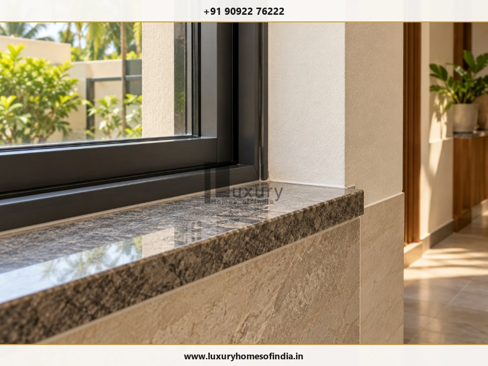

Direct Guidance for Homeowners
Choosing a luxury home builder in Chennai requires more than comparing construction rates or viewing attractive house photographs. You need to evaluate relevant completed projects, technical coordination, material specifications, the bill of quantities (BOQ), quality-control procedures, contract terms and post-handover support. Before appointing a builder, prepare a clear project brief, compare quotations against the same drawings and specifications, verify references, and document all commitments in writing. Pay particular attention to exclusions, additional-work charges, payment milestones and defect rectification. For a bespoke villa or independent house, the right builder is one whose proposed approach matches your requirements and whose claims can be supported by verifiable evidence. This guide explains how to assess candidates, compare proposals, identify warning signs and make a more informed construction decision.

1. Define Your Requirements Before Shortlisting Builders
A well-defined brief gives every shortlisted builder the same starting point. Without one, quotations may differ because each company is pricing a different interpretation of your project.
Document the following before requesting proposals:
- Site details: Plot dimensions, location, access, known site constraints and available survey information.
- Built-up area: Intended floor configuration and preliminary area requirements.
- Architectural direction: Contemporary, tropical, minimalist, traditional or another preferred style.
- Space planning: Bedrooms, living areas, kitchen, workspaces, storage, terraces, utility spaces and parking.
- Building systems: Air-conditioning, ventilation, water treatment, home automation, solar provisions and other requirements.
- Finish expectations: Flooring, windows, doors, sanitaryware, lighting, joinery and specialist materials.
- Budget and scope: Establish which construction activities, interiors, external works, taxes, approvals and professional fees need to be considered separately.
- Timing: Desired completion period and any important occupancy requirements.
Luxury should be assessed through design suitability, functionality, detailing, durability and execution—not merely the price of a material or the size of the house.
2. Verify Relevant Experience and Completed Projects
A portfolio is useful only when it provides credible evidence of the builder's ability to deliver a project similar to yours.
Ask to see completed independent houses or villas with comparable complexity, finish expectations and scope. Give greater weight to projects you can inspect than to photographs alone.
What to investigate
Completed projects
Look at workmanship, visible detailing, material consistency and the overall quality of the finished residence.
Active construction sites
Where permission is available, observe site organisation, supervision, protection of materials and coordination between trades.
Client references
Ask previous homeowners about communication, variations, delays, defect rectification and support after handover.
Project responsibility
Establish which activities the builder actually performed and which were handled by separate architects, consultants or contractors.
Recency and relevance: Confirm when the projects were completed and whether the people and processes responsible for them reflect the current proposed team.
A large portfolio does not automatically demonstrate competence in bespoke residential construction. Evaluate the relevance and verifiability of the evidence.

3. Evaluate Technical Expertise and Design Coordination
A luxury residence requires coordination between architecture, structural engineering, electrical installations, plumbing, waterproofing, ventilation and interior finishes.
Poor coordination can result in service routes conflicting with ceiling designs, inadequate maintenance access, drainage problems or expensive changes after work has begun.
Ask the proposed team:
- Who is responsible for architectural and structural design?
- Who coordinates electrical, plumbing and air-conditioning requirements?
- How are drawing revisions issued and communicated to the site?
- Who checks that construction follows the approved drawings?
- How are technical discrepancies resolved?
- Which specialist consultants are required for the proposed design?
Responsibilities should be identified in the project documentation rather than left to informal assumptions.
For general homeowner education, consult the Bureau of Indian Standards' homeowner and homebuyer guides, including its resources on building permits and constructing an independent house. The applicable requirements for an individual project must be confirmed with the relevant professionals and authorities.
4. Compare Detailed Quotations and BOQs
Do not select a builder solely because the quoted rate per square foot appears lower. The comparison is meaningful only when the area basis, scope, specifications, exclusions and pricing assumptions are consistent.
A bill of quantities (BOQ), or an equally detailed specification-based quotation, helps you understand what is included and how the proposed cost is structured.
Quotation Comparison Checklist
| Component | What to compare |
|---|---|
| Measurement basis | Built-up area definition, included areas and calculation method |
| Civil and structural scope | Work included under the approved engineering design |
| Waterproofing | Locations, system specifications and testing |
| Electrical | Wiring, switchgear, points, fittings and future provisions |
| Plumbing | Pipe systems, sanitaryware, fixtures and drainage |
| Windows and doors | Profiles, glazing, hardware, dimensions and finishes |
| Flooring and finishes | Material specifications, allowances and installation |
| Painting | Surface preparation, coating system and application |
| Interiors | Kitchen, wardrobes, joinery and storage inclusions |
| External works | Compound wall, gate, paving, drainage and landscaping |
| Exclusions | Separately priced works, approvals, utility connections and specialist systems |
| Commercial terms | Taxes, payment milestones, variations and price-change provisions |
Request written clarification for any significant price difference. An apparent saving may simply reflect an excluded item, a lower material allowance or a different scope.
A practical way to compare two proposals
- Use the same drawings and project brief for each builder.
- Record each quoted amount and its measurement basis.
- Identify included, excluded and provisionally priced items.
- Compare material specifications line by line.
- Add separately priced requirements to establish a more complete comparison.
- Record unresolved assumptions and request written clarification.
- Review the revised proposals before evaluating the contract terms.
Do not assume that the cheapest quotation is the least expensive completed project.
5. Verify Material Specifications Before Construction
Terms such as “premium quality” and “luxury finish” do not provide enough information to control procurement.
Where relevant, require written specifications for concrete, reinforcement, masonry, flooring, doors, windows, hardware, electrical components, plumbing products, waterproofing and paint systems. Structural materials and systems must be consistent with the design prepared by the responsible professionals.
For finish materials, record the selected product or an objectively defined specification, including relevant dimensions, grade, finish, installation requirements and allowance where applicable.
Ask how proposed substitutions will be handled. A change in product can affect appearance, performance, maintenance and cost.
The agreement should establish who can approve a substitution, how its effect on price or time is assessed, and how the decision is documented. Obtain written approval before an agreed specification is changed.
6. Assess Site Supervision and Quality Control
Quality depends on what happens during construction, including the checks performed before work becomes concealed.
Ask the builder who inspects each stage, what records are maintained and how defects are corrected.
| Construction stage | Items to verify |
|---|---|
| Before foundation work | Site information, relevant investigations, setting out and approved foundation design |
| Structural construction | Reinforcement, formwork, concrete placement, curing and required inspections |
| Masonry and plastering | Alignment, dimensions, openings and coordination with services |
| Electrical and plumbing | Routing, testing, accessibility and protection before concealment |
| Waterproofing | Surface preparation, specified application and required testing |
| Finishes | Tile alignment, joints, paint finish, doors, hardware and fixture operation |
| Handover | Functional testing, outstanding defects and agreed documentation |
The relevant inspection and testing requirements should be established by the responsible professionals and project specifications.
Ask whether the team maintains inspection records, test reports, dated photographs and written defect lists. These records help establish what was checked and what remains unresolved.
7. Check Project Management and Communication
A construction project involves ongoing decisions about drawings, procurement, variations, payments and quality. A clear communication process reduces the risk of misunderstandings.
Before signing, confirm:
- Who is your main point of contact?
- Who supervises the site and how often?
- How frequently will progress reports be provided?
- How will expenditure, pending decisions and delays be reported?
- How are drawing revisions recorded?
- How are additional works priced and approved?
- How will disagreements about scope or workmanship be escalated?
Agree on a reporting format that covers completed work, upcoming activities, unresolved issues, financial changes and decisions required from the homeowner.
The process should be documented so that important commitments do not depend entirely on informal conversations.
8. Review the Construction Agreement Carefully
A quotation is not a substitute for a complete construction agreement.
The contract should define the responsibilities of both parties, the work being purchased and the process for handling changes, defects and disputes.
Essential provisions to review
Scope of work: Clearly state inclusions, exclusions and separately priced activities.
Drawings and specifications: Identify the approved documents forming part of the agreement.
Contract price: State the pricing basis, applicable taxes and relevant assumptions.
Payment milestones: Link payments to defined stages or verifiable progress.
Completion schedule: Establish the programme and the procedure for dealing with delays.
Variations: Require documented approval for changes to scope, price or time.
Material substitutions: Define approval and recording procedures.
Quality and testing: Set out the applicable inspections and acceptance requirements.
Defects and warranties: Document reporting, rectification responsibilities, applicable periods and exclusions.
Termination and dispute resolution: Establish the agreed contractual procedures and remedies.
Have an independent lawyer review the agreement before committing significant funds.
Check the regulatory requirements that apply to your project
The applicable approvals and registration obligations depend on the project type, location, ownership and relevant law. Do not assume that the rules governing a real-estate development are identical to those governing every individual house-construction contract.
Review the relevant official guidance and seek qualified advice where necessary. For projects involving real-estate development, check the applicable requirements and project information through the Tamil Nadu Real Estate Regulatory Authority (TNRERA).
9. Understand Payment Milestones and Budget Risks
A reliable budget starts with a defined scope, transparent pricing and a clear method for approving changes.
Before agreeing to the payment schedule, establish:
- What the initial payment covers.
- Which deliverables or milestones trigger each subsequent payment.
- How completed work will be verified.
- How advance procurement is treated.
- How additional works are valued and approved.
- How material price changes are addressed under the agreement.
- What conditions apply to the final payment.
Avoid making payments without understanding the work or obligation they cover. Any advance should have a documented commercial basis and appropriate contractual protections.
Plan for uncertainty
Unexpected ground conditions, design changes, upgrades and additional site work may affect the budget. The appropriate contingency depends on the project's design maturity, site information and the certainty of the quotation.
Discuss a suitable reserve with your architect, quantity surveyor or construction professional instead of applying an arbitrary percentage to every project.
For related guidance, explore LHI's comprehensive guide to hidden costs in house construction in Chennai.
10. Assess the Proposed Construction Timeline
A completion date should be supported by a practical programme rather than an unsupported promise.
The schedule should consider design finalisation, applicable approvals, site preparation, structural work, service installations, finishes, procurement, inspections and handover.
Potential constraints include site conditions, design revisions, approval processes, material availability, weather, specialist contractors and delayed homeowner decisions.
Ask for stage-wise milestones and identify which activities depend on earlier decisions or approvals. The contract should explain how delays are documented, how extensions are assessed and what remedies apply.
For further reading, review LHI's detailed house construction process step by step guide and our analysis of why house construction gets delayed in Chennai and how to prevent it.
11. Confirm Defect Rectification and Post-Handover Support
Handover should include more than the transfer of keys. It should establish that the agreed work has been inspected, outstanding items have been recorded and the required documents have been provided.
Before appointing a builder, request written details covering:
- Responsibilities for defects in workmanship and construction.
- Procedures for reporting leakage or waterproofing concerns.
- Electrical, plumbing and installed-equipment support.
- Applicable warranty periods and exclusions.
- How complaints are tracked and rectified.
- The documentation supplied at handover.
The actual obligations must be established by the contract and applicable law.
Prepare a snag list before final acceptance. Record incomplete work and visible defects, test installed systems, and confirm the operation of doors, windows, taps, drainage, pumps and electrical points as applicable.
Collect the agreed drawings, test records, product manuals, warranties and other handover documents.
12. Recognise Warning Signs Before Appointing a Builder
Treat the following as reasons for closer investigation:
An unusually low quotation without a clear scope.
Unspecified materials or unexplained substitutions.
No credible, verifiable examples of relevant completed projects.
Pressure to sign before reviewing the contract.
Large advance-payment demands without a clear basis.
A completion promise without a workable schedule.
Repeated quotation changes without written explanations.
Unclear responsibility for design, engineering or site supervision.
Refusal to document additional work or agreed warranty terms.
No clear explanation of inspection and defect-correction procedures.
One concern does not automatically establish that a builder is unsuitable. However, repeated refusal to provide reasonable documentation is a material reason to reconsider the appointment.
See the related LHI guide, Red Flags When Hiring a Builder in Chennai, for an exhaustive analysis of high-risk warning signs.
13. Score Shortlisted Builders Using the Same Criteria
Use a consistent evaluation framework to compare proposals and the evidence behind them.
| Evaluation category | Weight |
|---|---|
| Relevant projects and client references | 20% |
| Technical expertise and drawing coordination | 15% |
| BOQ and specification transparency | 15% |
| Quality control and site supervision | 15% |
| Contract clarity and financial transparency | 15% |
| Project management and communication | 10% |
| Timeline and procurement planning | 5% |
| Handover and defect rectification | 5% |
| Total | 100% |
Score each category from 1 to 5, where 1 means weak evidence and 5 means strong, verifiable evidence.
Calculate each weighted contribution using:
For example, a score of 4 out of 5 in the completed-projects category earns 16 out of 20 points ( (4 / 5) × 20 = 16 ).
Use the total as a comparison aid, not a guarantee of future performance. A high score cannot compensate for a serious unresolved concern involving structural competence, legal compliance or contractual protection.
14. Questions to Ask Before Making Your Final Decision
Take this checklist to your consultation:
- Can I inspect completed projects relevant to my requirements?
- Can I speak with previous homeowners?
- Who is responsible for design, engineering and drawing coordination?
- Will I receive a detailed BOQ and written material specifications?
- Which items are excluded from the quotation?
- Who supervises the site and provides progress reports?
- How are inspections and tests recorded?
- How are variations and material substitutions approved?
- What are the payment milestones?
- What supports the proposed completion schedule?
- What defect rectification and post-handover support are included?
- Which approvals and regulatory requirements apply?
- Can an independent lawyer review the agreement before I commit?
Look for clear answers supported by documents, not merely verbal assurances.
Frequently Asked Questions
How do I choose a luxury home builder in Chennai?
Define your project brief, shortlist builders with relevant completed work, verify references and compare detailed proposals. Assess technical coordination, material specifications, quality-control procedures, contract terms, payment milestones and post-handover support before making a decision.
Should I choose the lowest construction rate?
Not without comparing the underlying scope. A lower rate may reflect different specifications, allowances, exclusions or measurement methods. Compare proposals against the same drawings and documented requirements.
What documents should I request?
Request a detailed quotation, BOQ or specification schedule, relevant drawings, project programme, draft agreement, payment milestones and written defect or warranty terms. Verify applicable professional and regulatory documentation.
How can I assess construction quality?
Inspect relevant completed and ongoing projects, review specifications and ask about documented quality checks and testing. Previous homeowners can provide additional insight into communication, changes and defect rectification.
Is turnkey construction suitable for a luxury house?
It may be suitable when the responsibilities and deliverables are clearly defined. Confirm which design services, materials, installations, interiors, external works, exclusions and handover obligations are included. The term turnkey alone does not establish the scope.
How can I reduce the risk of cost overruns?
Finalise the design and specifications as far as practical, obtain an itemised quotation, clarify exclusions and maintain a project-appropriate contingency. Require documented approval for changes and understand the contract's pricing provisions.
Should I appoint my own architect?
Either a builder-led or separately appointed design arrangement can work. Responsibilities, professional independence where relevant, drawing coordination, revisions and site decisions should be clear before work begins.
What should I check at handover?
Compare the completed work against the agreement, record defects, test installed systems, obtain the agreed manuals and warranties, and collect the relevant drawings, test records and completion-related documents.
Conclusion: Choose Evidence Over Promises
Choosing a luxury home builder in Chennai is a decision that deserves a structured, evidence-led approach. Compare relevant experience, technical responsibilities, itemised costs, specifications, quality checks and contractual commitments before appointing a contractor.
A clear brief and a consistent evaluation process help you identify gaps before they become expensive disagreements. Site visits, independent professional advice and written agreements provide additional safeguards.
The objective is not simply to find a builder offering an attractive quotation. It is to choose a partner whose documented approach matches your project's requirements and whose responsibilities are clear from planning through handover.
Planning a Luxury Home in Chennai?
If you are considering a residential construction project, prepare a short brief covering your plot details, approximate built-up area, design preferences, expected scope and budget assumptions before approaching a construction company.
Luxury Homes of India provides end-to-end architectural planning, structural engineering, and turnkey luxury villa construction across Chennai and Tamil Nadu.
Disclaimer: This article provides general educational information and is not legal, engineering, financial or regulatory advice. Requirements vary according to the project, site, jurisdiction and contract. Consult suitably qualified professionals before making construction or contractual decisions.
Written by: Luxury Homes of India Editorial | Reviewed by: LHI In-House Technical Team